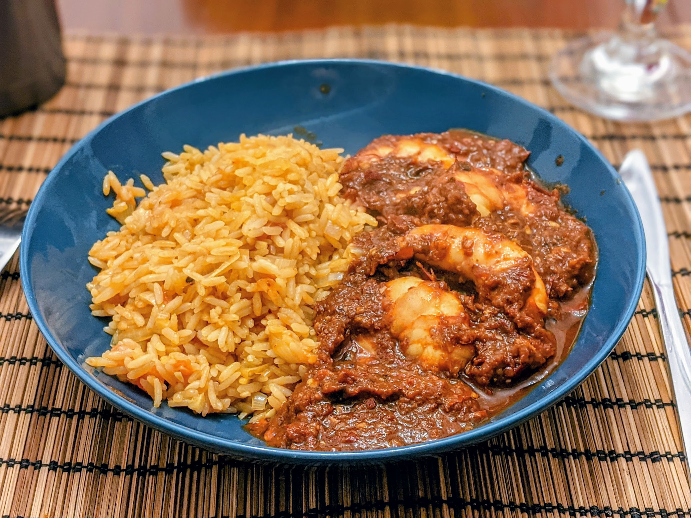

Camarones a la diabla

Ici avec du riz mexicain
Pour 4 personnes :
- 800g de crevettes
- Huit piments guajillo séchés
- Trois piments de árbol séchés
- Trois grosses tomates
- Deux gousses d'ail
- Un petit oignon
- Sel, poivre, huile d'olive
- Rincer, épépiner, et enlever les queues des piments guajillo. Rincer et épépiner les piments de árbol.
- Submerger les piments dans de l'eau bouillante dans un bol. Couvrir et laisser tremper un bon quart d'heure.
- Pendant ce temps, laver et couper les tomates grossièrement, éplucher et émincer l'ail et l'oignon. Décortiquer et déveiner les crevettes.
- Égoutter les piments vite fait. Les mixer avec les tomates, l'ail, l'oignon et un peu de sel jusqu'à ce que ça soit bien homogène.
- Faire chauffer de l'huile d'olive à feu assez fort dans une grande poêle. Y faire revenir les crevettes environ une minute de chaque côté, jusqu'à ce qu'elles prennent une couleur rose clair.
- Ajouter la sauce dans la poêle, mélanger pour bien recouvrir les crevettes, et laisser cuire quelques minutes, jusqu'à ce que la sauce soit bien chaude au point de faire des bubulles.
- Servir immédiatement, par exemple avec du riz mexicain